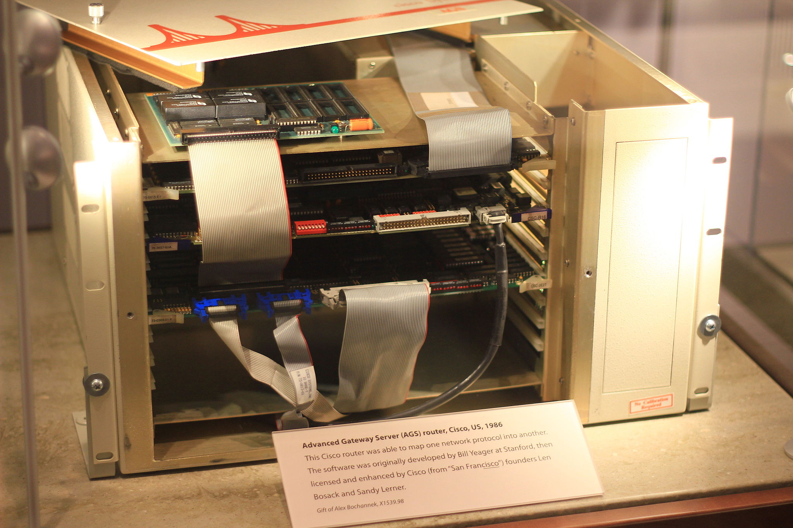
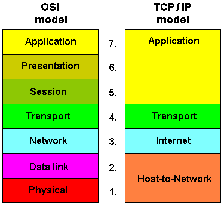

CSET 2200
Lecture 3 - OSI Model/TCP Model/Network Theory
Review network history
Cisco AGS
The OSI model
AKA that thing you need to learn but don't directly use
The OSI Model
 OSI Model
OSI Model
Ways to remember it
Programmer's don't need to see pretty applications
Ways to remember it
Please do not throw sausage pizza away
Mmmm Pizza
Ways to remember it
People don't need those stupid packets anyways
 Token Ring
Token Ring
Ways to remember it
Please do not teach students pointless acronyms
Physical Layer
- Data Unit: Bit
- Electrical
- Various technologies (Ethernet/Token Ring/Wifi)
Data Link Layer
- Data Unit: Frame
- Reliable Transport
- Ethernet - 802.2
Network Layer
- Data Unit: Packet
- Not guaranteed to be reliable
- May split packets if too big
- IP
Transport Layer
- Data Unit: Datagram, Segment
- Provides multiplexing and flow control
- UDP, TCP
Session Layer
- Handles Burrito Delivery (Just seeing if you're paying attention)
- Handles sessions and establishment of connections
- Nothing really in TCP/IP model
Presentation Layer
- Handles converting data between formats
- Allows program to be absolved of conversions
- Presentation layer is usually OS, but may be application
Application Layer
- Application all the things
- Handles higher level protocals implemented in the application
- Examples include SMTP, NNTP, FTP
TCP/IP Model
OSI vs TCP
Comparisons of Models
- TCP/IP simplified
- I believe 5 layers
- Segregates protocols more logically
General Network Discussion